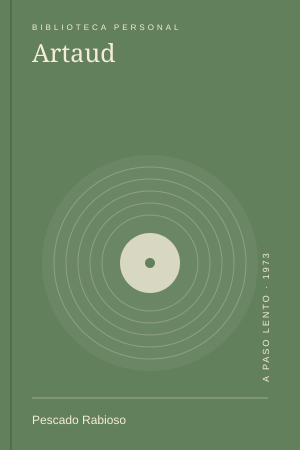

Lecturas
LecturasSiddhartha y las preguntas que cambian
Releer una búsqueda conocida y descubrir que ya no pregunto desde el mismo lugar.
Las 5 notas que se conectan con 2024.
LecturasReleer una búsqueda conocida y descubrir que ya no pregunto desde el mismo lugar.

MúsicaEscuchar un disco conocido sin dejar que la costumbre termine las canciones antes de tiempo.
 Series
SeriesEl trabajo compartido como un lugar de tensión, aprendizaje y cuidado.
Salir de la ciudad sin dejarla del todo y volver con un volumen distinto.
Una libreta corriente y una forma menos editable de pensar.